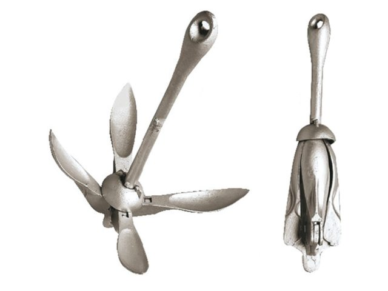

яхты и катера
Anchor Cat galvanized

Описание товара
- Стальной оцинкованный якорь,
отлично подходящий для использования на маломерных судах,
в том числе на речных лодках и катерах. Удобно хранится и транспортируется благодаря складным лопастям.
4-5 килограммовый якорь-кошка прекрасно держит лодки водоизмещением до 400 кг на любом типе грунта.